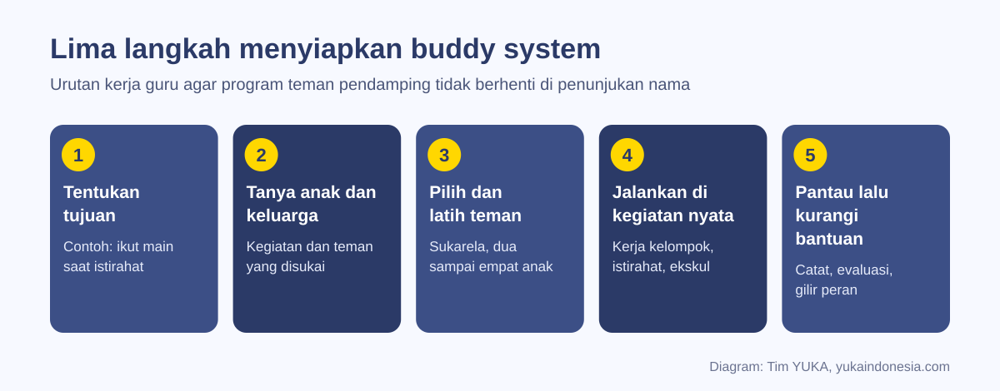
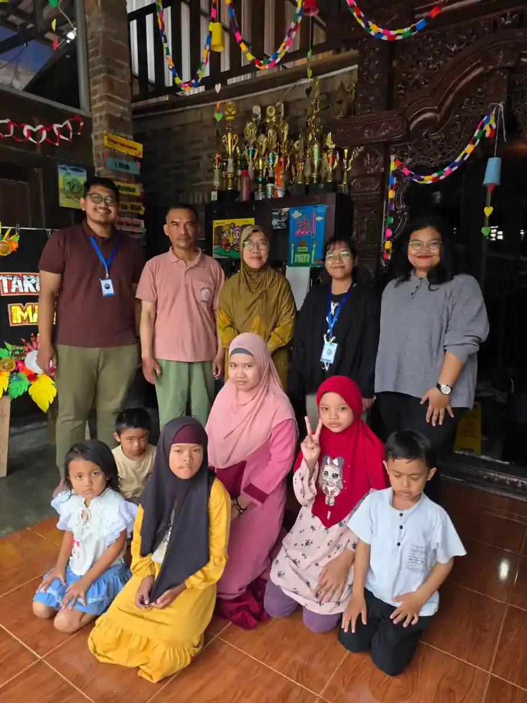
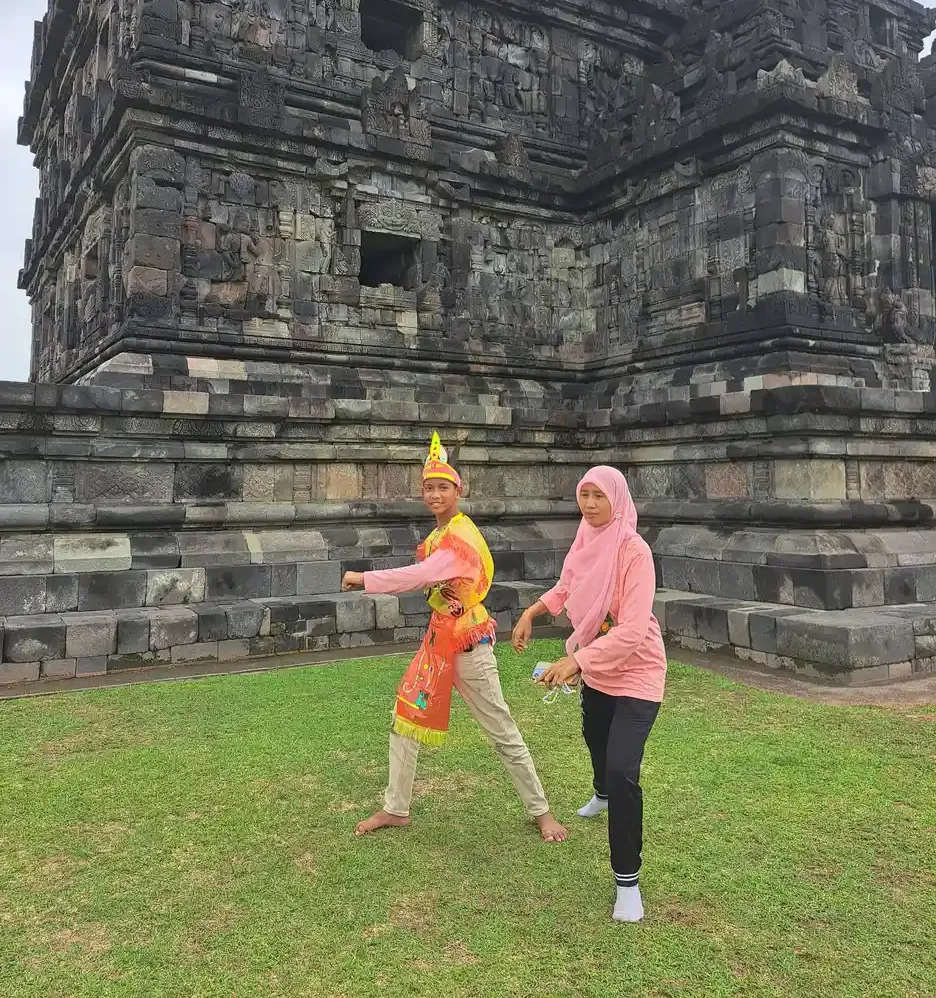

Buddy system untuk anak ABK adalah program sekolah yang memasangkan anak berkebutuhan khusus dengan satu atau beberapa teman sebaya yang sudah dilatih, agar ia lebih mudah ikut bermain, belajar kelompok, dan berteman. Riset menunjukkan program teman sebaya efektif bila teman dilatih, kegiatannya nyata, dan guru tetap memantau.
Duduk di kelas yang sama belum tentu berarti diterima. Banyak anak berkebutuhan khusus (ABK) di sekolah inklusi menghabiskan jam istirahat sendirian, bukan karena tidak ingin berteman, tetapi karena tidak tahu cara bergabung, dan teman-temannya juga tidak tahu cara mengajak. Di sinilah buddy system atau program teman pendamping sebaya berperan.
Panduan ini ditulis untuk guru kelas, guru pembimbing khusus, dan orang tua yang ingin menyiapkan program tersebut dengan benar. Isinya melengkapi gambaran umum pendidikan inklusi di situs YUKA: apa yang dimaksud buddy system, bukti risetnya, langkah menyiapkan, cara melatih teman, contoh kegiatan, cara memantau, sampai kesalahan yang sering terjadi.
Penting sebelum membaca
Buddy system adalah dukungan sosial, bukan pengganti guru pembimbing khusus, shadow teacher, atau terapi. Tanggung jawab atas keamanan dan pembelajaran anak tetap ada pada orang dewasa di sekolah.
Daftar Isi
Apa Itu Buddy System dan Bedanya dengan Peer Tutoring
Dalam riset pendidikan khusus, buddy system termasuk keluarga besar peer-mediated intervention, yaitu pendekatan yang melibatkan teman sebaya sebagai "jembatan" interaksi. Teman sebaya diajari cara mengajak, menunggu respons, memberi pilihan, dan memuji, lalu dipertemukan dengan anak ABK dalam kegiatan yang sudah ada di sekolah.
Ada beberapa bentuk yang sering tertukar. Tabel berikut membantu membedakannya:
| Bentuk | Tujuan utama | Siapa yang terlibat | Contoh di sekolah |
|---|---|---|---|
| Buddy satu lawan satu | Teman tetap untuk kegiatan tertentu | Satu teman sebaya terlatih | Teman menemani saat istirahat dan pindah ruang |
| Peer network (jaringan teman) | Memperluas lingkar pertemanan | Dua sampai empat teman, bergantian | Kelompok makan siang atau klub hobi mingguan |
| Peer tutoring | Membantu pelajaran akademik | Teman yang menguasai materi | Latihan membaca berpasangan |
| Pendampingan orang dewasa | Dukungan belajar dan perilaku | Shadow teacher atau GPK | Pendamping di samping anak sepanjang pelajaran |
Peran orang dewasa dibahas terpisah di artikel shadow teacher dan guru pembimbing khusus (GPK). Buddy system melengkapi keduanya: orang dewasa membantu anak belajar, teman sebaya membantu anak merasa menjadi bagian dari kelas.
Apa Kata Riset tentang Program Teman Sebaya
Program teman sebaya bukan sekadar ide yang terdengar baik. Meta-analisis Watkins dan rekan (2019) meninjau 28 studi intervensi untuk siswa autis di sekolah inklusi yang memenuhi standar kualitas What Works Clearinghouse. Sebagian besar studi berfokus pada keterampilan komunikasi sosial, dan intervensi yang dimediasi teman sebaya termasuk kelompok yang menghasilkan efek besar, bersama dukungan visual dan pemantauan diri (Watkins dkk., 2019).
Uji acak terkontrol oleh Asmus dan rekan (2017) di sekolah menengah atas melibatkan 47 siswa dengan disabilitas berat. Staf sekolah mengundang dan melatih 192 teman sebaya untuk membentuk kelompok sosial selama satu semester. Dibanding kelompok kontrol, siswa yang mendapat peer network memperoleh lebih banyak kontak sosial dan pertemanan baru, dan banyak hubungan bertahan satu sampai dua semester kemudian. Catatannya, pertemanan itu jarang berlanjut di luar jam sekolah (Asmus dkk., 2017).
Studi Kasari dan rekan (2016) pada 137 anak autis usia sekolah dasar menunjukkan bahwa kelompok keterampilan sosial di sekolah dapat meningkatkan keterlibatan dengan teman saat istirahat, dan bahwa kedekatan guru dengan anak ikut menentukan pendekatan mana yang paling cocok (Kasari dkk., 2016).
Dari ketiga kajian ini, pelajarannya konsisten: hasil terbaik datang dari teman yang dilatih, kegiatan yang terstruktur, dan guru yang terlibat. Menunjuk "teman duduk" lalu berharap persahabatan tumbuh sendiri jarang cukup.
Manfaat untuk Anak ABK dan Teman Sebayanya
Bagi anak ABK, manfaat yang paling sering terlihat adalah lebih banyak kesempatan berinteraksi: diajak bermain, punya pasangan saat kerja kelompok, dan tahu kepada siapa bertanya ketika bingung dengan instruksi. Kesempatan ini menjadi tempat latihan alami bagi keterampilan yang diajarkan dalam social skills training, sehingga keterampilan tidak berhenti di ruang terapi.
Bagi teman sebaya, program yang baik melatih kepemimpinan, kesabaran, dan cara berkomunikasi dengan orang yang berbeda. Nilai-nilai ini sejalan dengan tujuan inklusi sosial: semua anak belajar bahwa perbedaan adalah hal biasa. Penting dicatat, manfaat bagi teman sebaya adalah efek samping yang baik, bukan alasan utama program. Anak ABK bukan "proyek" untuk melatih karakter teman-temannya.
Bagi guru, buddy system membantu kelas berjalan lebih lancar. Saat anak ABK punya teman yang tahu rutinitasnya, perpindahan kegiatan dan kerja kelompok lebih mulus. Prinsip pengelolaan kelas yang mendukung hal ini dibahas di artikel classroom management kelas inklusi.
Lima Langkah Menyiapkan Buddy System
Urutan langkah di bawah ini disusun agar program tidak berhenti di penunjukan nama.
- Tentukan tujuan yang bisa diamati. Contohnya "ikut permainan kelompok saat istirahat minimal dua kali seminggu" atau "punya pasangan tetap saat kerja kelompok IPA". Tujuan ini sebaiknya selaras dengan program pembelajaran individual (PPI) anak.
- Tanyakan pada anak dan keluarga. Kegiatan apa yang ia sukai? Teman mana yang membuatnya nyaman? Apakah ia lebih suka satu teman atau kelompok kecil? Anak yang belum lancar bicara bisa ditanya lewat gambar atau aplikasi komunikasi AAC.
- Pilih dan latih teman. Pilih secara sukarela, dua sampai empat anak, lalu beri pelatihan singkat (lihat bagian berikutnya).
- Jalankan di kegiatan nyata. Tempelkan program pada kegiatan yang memang sudah ada: istirahat, makan bersama, kerja kelompok, ekstrakurikuler.
- Pantau, lalu kurangi bantuan guru. Catat perkembangan setiap minggu, evaluasi bersama anak, dan perlahan biarkan interaksi berjalan tanpa arahan guru.

Payung kebijakannya juga ada. Permendikbudristek Nomor 48 Tahun 2023 mengatur akomodasi yang layak bagi peserta didik penyandang disabilitas di satuan pendidikan, dan dukungan agar anak bisa berpartisipasi dalam kegiatan sekolah termasuk dalam semangat aturan tersebut. Hak anak ABK atas pendidikan yang setara dirangkum di artikel apa saja hak anak berkebutuhan khusus.
Cara Memilih Teman Pendamping yang Tepat
Godaan terbesar guru adalah memilih siswa paling pintar atau paling populer. Padahal kriteria yang lebih penting adalah minat dan sikap. Teman yang cocok biasanya:
- Mau terlibat secara sukarela, bukan karena ditugaskan atau dijanjikan nilai tambahan.
- Punya minat yang sama dengan anak ABK, misalnya sama-sama suka menggambar, sepak bola, atau kereta api.
- Bisa mengikuti arahan orang dewasa dan menjaga rahasia teman.
- Cukup sabar menunggu respons tanpa mengambil alih.
Hindari membebani satu anak terus-menerus. Peer network berisi dua sampai empat teman yang bergantian lebih tahan lama daripada satu buddy permanen, dan memberi anak ABK pilihan teman. Jangan pula memilih saudara kandung yang bersekolah di tempat yang sama sebagai buddy default; mereka juga butuh ruang untuk pertemanannya sendiri.
Mintalah izin orang tua teman sebaya dan jelaskan tujuannya. Orang tua yang paham biasanya justru mendukung, dan ini membuka percakapan yang lebih luas tentang sekolah inklusi di antara wali murid.

Materi Pelatihan Singkat untuk Teman Sebaya
Pelatihan tidak perlu panjang. Sesi singkat sepulang sekolah, lalu pendampingan langsung saat kegiatan, sudah memadai untuk memulai. Isi yang disarankan:
| Materi | Yang diajarkan | Contoh kalimat atau tindakan |
|---|---|---|
| Mengenal teman | Kekuatan, kesukaan, dan cara berkomunikasi teman, tanpa membuka diagnosis tanpa izin keluarga | "Raka suka kereta. Dia kadang menjawab dengan menunjuk gambar." |
| Mengajak bergabung | Menyebut nama, menawarkan pilihan, memberi contoh | "Raka, mau main bola atau balok?" |
| Menunggu respons | Memberi jeda beberapa detik sebelum mengulang | Diam sejenak, lalu ulangi dengan gerakan |
| Memuji dan bergiliran | Pujian spesifik dan aturan gantian yang jelas | "Tendanganmu kencang! Sekarang giliranku." |
| Kapan memanggil guru | Situasi yang bukan tugas anak | Teman menangis lama, berkelahi, atau tampak tidak aman |
Tekankan bahwa teman ABK adalah teman sekelas, bukan pasien. Cara berkomunikasi yang sederhana dan sabar juga dibahas dalam artikel cara melatih social skills anak autis di rumah, yang bisa dibagikan ke orang tua teman sebaya.
Contoh Kegiatan yang Cocok untuk Buddy System
Kegiatan terbaik adalah yang memberi alasan alami untuk berinteraksi: ada benda yang dipakai bersama, aturan main, atau tujuan bersama. "Duduk di sebelahnya dan ajak ngobrol" biasanya kurang berhasil karena tidak ada yang dibicarakan.
- Permainan saat istirahat dengan aturan sederhana, seperti lempar tangkap bola, engklek, atau balok susun.
- Kerja kelompok dengan peran yang jelas: satu menggunting, satu menempel, satu menulis judul.
- Klub minat seperti menggambar, memasak, atau berkebun yang memakai bahan bersama.
- Kegiatan seni dan gerak seperti menari atau musik, yang tidak menuntut banyak bicara.
- Tugas kelas bergilir, misalnya membagikan buku atau menyiram tanaman berdua.
- Kegiatan luar kelas seperti kunjungan museum, tempat teman bisa membantu dengan antrean dan perpindahan.
Untuk anak dengan ADHD, kegiatan yang aktif dan berdurasi pendek biasanya lebih berhasil; strategi pendukungnya ada di artikel strategi mengajar anak ADHD di sekolah. Untuk anak autis, prediktabilitas penting, sehingga jadwal buddy sebaiknya tetap dan diberitahukan sebelumnya, seperti dibahas di strategi mengajar anak autis di kelas.

Memantau Perkembangan dan Menghindari Kesalahan Umum
Pemantauan tidak harus rumit. Guru cukup mencatat, misalnya sekali seminggu: berapa kali anak ABK ikut bermain, siapa yang mengajak lebih dulu, dan bagaimana perasaan anak (bisa ditanyakan dengan skala gambar wajah). Catatan ini dibahas dalam pertemuan rutin dengan orang tua dan menjadi bahan evaluasi PPI.
Kesalahan yang paling sering terjadi:
- Menunjuk tanpa melatih. Teman yang tidak dibekali cenderung mengambil alih, misalnya menyelesaikan tugas anak ABK, sehingga anak justru kurang berlatih.
- Satu teman selamanya. Buddy tunggal cepat lelah, dan anak ABK menjadi tergantung pada satu orang.
- Mengumumkan di depan kelas. Menyebut "Dina akan menjaga Raka karena Raka autis" membuat anak dicap berbeda. Bicarakan secara pribadi dan seizin keluarga.
- Guru melepas sepenuhnya. Anak-anak tetap butuh orang dewasa yang memantau, terutama untuk mencegah ejekan dan kelelahan.
- Memberi imbalan yang salah. Hadiah untuk "menjaga" teman mengubah persahabatan menjadi transaksi. Apresiasi sebaiknya untuk kerja sama seluruh kelompok.
Masa transisi seperti naik kelas atau pindah jenjang adalah waktu yang tepat untuk meninjau ulang susunan buddy; panduan transisi anak ABK dari TK ke SD membahas persiapan masa peralihan ini.
Peran Orang Tua dalam Mendukung Buddy System
Orang tua anak ABK bisa membantu dengan memberi informasi tentang kesukaan, pemicu kewalahan, dan cara berkomunikasi anak kepada guru. Informasi ini membuat pelatihan teman sebaya lebih tepat sasaran. Diskusikan juga sejauh mana keluarga nyaman informasi tentang kondisi anak dibagikan kepada teman-temannya.
Di rumah, orang tua bisa memperpanjang pertemanan yang tumbuh di sekolah, misalnya mengundang teman buddy bermain di akhir pekan dengan kegiatan yang disukai keduanya. Riset Asmus dan rekan menunjukkan pertemanan sekolah jarang berlanjut ke luar jam sekolah dengan sendirinya, sehingga inisiatif kecil dari keluarga berarti besar.
Orang tua teman sebaya juga punya peran: mendukung anaknya yang menjadi buddy, sekaligus memastikan anaknya tidak terbebani. Kerja sama antarwali murid seperti ini adalah bagian dari peran orang tua dalam pendidikan inklusi. Bila empati menjadi nilai keluarga, anak lebih siap menjadi teman yang baik, seperti dibahas dalam empati pada anak berkebutuhan khusus.
Pendampingan di YUKA
Di Sekolah Inklusi Taruna Imani, kegiatan bersama seperti makan siang, memasak, dan kunjungan ke museum menjadi kesempatan siswa saling mengenal. Guru dan pendamping YUKA siap berdiskusi dengan sekolah atau orang tua yang ingin memulai program teman sebaya. Hubungi kami lewat WhatsApp untuk berbagi pengalaman.
Pertanyaan yang Sering Diajukan
Apa itu buddy system untuk anak ABK?
Buddy system untuk anak ABK adalah program sekolah yang memasangkan anak berkebutuhan khusus dengan satu atau beberapa teman sebaya yang sudah dilatih, supaya anak lebih mudah ikut bermain, bekerja kelompok, dan berteman. Guru tetap merencanakan dan memantau program ini.
Apa bedanya buddy system dengan peer tutoring?
Buddy system berfokus pada interaksi sosial dan rasa diterima, misalnya teman saat istirahat. Peer tutoring berfokus pada bantuan akademik, misalnya latihan membaca berpasangan. Keduanya bisa berjalan bersamaan dengan tujuan yang berbeda.
Apakah buddy system terbukti efektif?
Riset mendukungnya bila dijalankan terstruktur. Meta-analisis Watkins dan rekan (2019) atas 28 studi menemukan intervensi yang dimediasi teman sebaya umumnya berefek besar, dan uji acak Asmus dan rekan (2017) menemukan siswa dalam peer network mendapat lebih banyak teman baru.
Berapa jumlah teman ideal dalam buddy system?
Banyak sekolah memakai kelompok kecil berisi dua sampai empat teman yang bergantian. Cara ini mencegah satu anak kelelahan dan membuat anak ABK tidak tergantung pada satu orang saja.
Bagaimana cara memilih teman pendamping?
Pilih teman yang sukarela, punya minat sama, sabar, bisa mengikuti arahan guru, dan bisa menjaga rahasia. Siswa paling pintar atau paling populer belum tentu paling cocok. Mintalah izin orang tua teman tersebut.
Apakah teman sebaya perlu tahu diagnosis anak ABK?
Tidak harus. Yang perlu diketahui adalah kesukaan, kekuatan, dan cara berkomunikasi anak. Informasi diagnosis hanya dibagikan bila keluarga mengizinkan dan dengan bahasa yang tidak memberi cap.
Apakah buddy system bisa menggantikan shadow teacher?
Tidak. Shadow teacher dan guru pembimbing khusus membantu pembelajaran dan perilaku anak, sedangkan buddy system membantu sisi sosial. Tanggung jawab atas keamanan dan pembelajaran tetap pada orang dewasa.
Apa kesalahan paling umum saat menjalankan buddy system?
Menunjuk teman tanpa pelatihan, memakai satu buddy permanen, mengumumkan kondisi anak di depan kelas, melepas pemantauan guru, dan memberi hadiah kepada teman karena menjaga anak ABK.
Bacaan Terkait
Bacaan lanjutan untuk guru dan orang tua di sekolah inklusi:
Sumber dan Referensi
- Watkins L dkk. Interventions for students with autism in inclusive settings: A best-evidence synthesis and meta-analysis. Psychological Bulletin, 2019
- Asmus JM dkk. Efficacy and Social Validity of Peer Network Interventions for High School Students With Severe Disabilities. Am J Intellect Dev Disabil, 2017
- Kasari C dkk. Children with autism spectrum disorder and social skills groups at school: a randomized trial. J Child Psychol Psychiatry, 2016
- Permendikbudristek Nomor 48 Tahun 2023 tentang Akomodasi yang Layak untuk Peserta Didik Penyandang Disabilitas (JDIH Kemendikdasmen)
Catatan: Artikel ini bersifat edukasi umum dan bukan pengganti saran psikolog, guru pendidikan khusus, dokter, atau tenaga profesional lain. Sumber diperiksa tim YUKA pada 5 Oktober 2026.